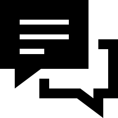

Home
Home Contact
Contact
Sherlockian.net Redesign
A redesign of Sherlockian.net for a mobile-first era
Project Overview
Challenge:
Design and create a site that has mobile first in mind for the modern online era without taking away from the theme and feel of the site while maintaining accessibility.
Team:
Myself and the Sherlockian.net Team
The Process
What is the Goal?
The goal for this project was to redesign the site to make it more mobile friendly, more accessible, and get rid of unnecessary components. The main main site was hosted on a CMS so the effectively implement these changes I had to use the custom code editor and work around what was already there.
Necessities:
- Accessible
- Flexible
- Mobile First
- Minimal
- Efficient
- USer Friendly
The Challenge of CMS
I usually prefer to code things myself. Using any kind of CMS seems restrictive and limits the capabilities of the product in my opinion. This was the biggest challenge I came across when redesigning this site. Because everything was hosted on a CMS I was forced to use the custom code editor to make the changes that were necessary. This itself was not the challenge. The challenge was going through the code of the site to know which elements needed to be changed. The project turned out great once I was able to overcome this challenge and the team was extremely happy.
Wireframe
The first thing I did was create a wireframe of what the layout of the site should be. This is usually the first step in my process. It is important to know what kind of hierarchy your site should have, this is essentially the user experience. At a glance the user shoud be able to identify what is important and what they need. After I got a good sense of space allocation I was able to move on the next step.
Mockup
Using Figma I was able to create mockups from the wireframes of what I wanted the overall site to look/feel like. Using tools like Figma or Sketch really helps the product come together because you are able to easily create an idea, present it to stakeholders, and get feedback through user testing.
What I Learned
- Flexibility when it comes to solutions is essential. This is how they get solved. Being able to look at a problem and see multiple routes to a solution is key to any success. It is okay if one route leads to a failure, this is why it is important to see every angle possible. If you can see all the angles there is no problem that can't be solved.
-
Communication with the team is always key. Especially when working with an already existing site. There
is a feel to sites that is there on purpose. Everything on the page
is in that place for a reason. Keeping this feel is crucial to the product and the team. This is why
communication is so important.

- Being part of a team is when everyone comes together for a cause. This is what this project was about. This site had so much content from so many people that it was necessary that they all be a part of the process. Redesigning something is more than just changing some stuff around to make a page look pretty. It involves the people who first created it. They know how this content should feel on the site the best. This is why bringing all perspectives of everyone on the team is always important.


Deliverables
The final deliverable was a redesigned Sherlockian.net. More accessible, more mobile friendly, all around
better.
Sherlockian.net
Site Design and Build by Colton Almaraz